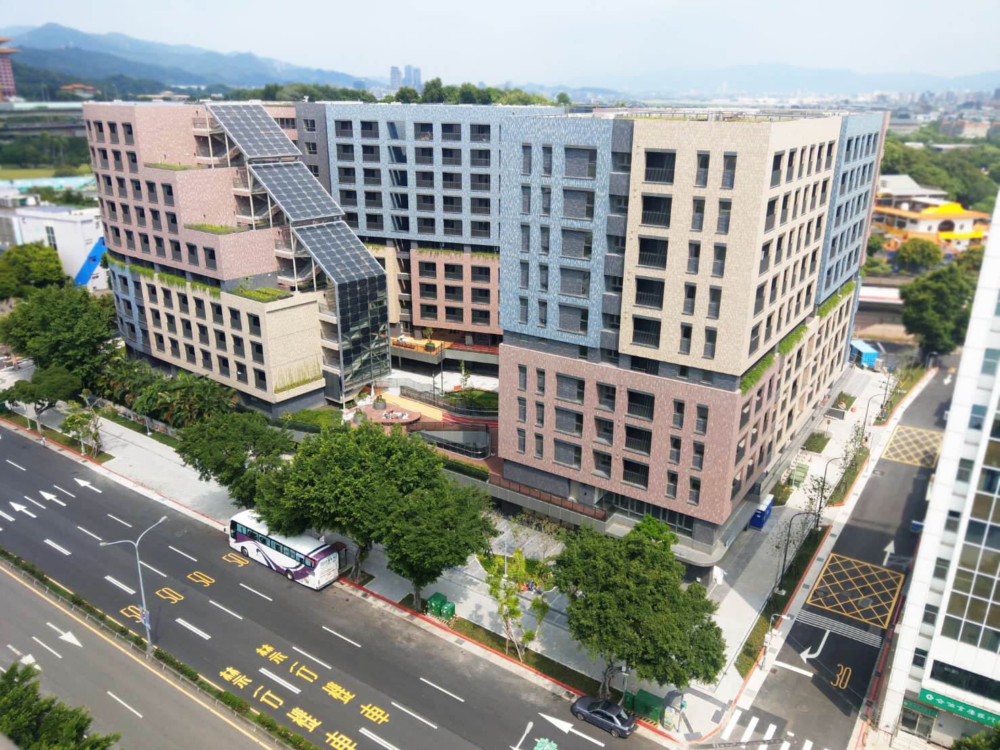

明倫社宅
明倫社會住宅是位在中華民國臺灣省臺北市大同區的社會住宅，2017年動工，2020年完工，共有380戶。此社宅之土地原為臺北市大同區明倫國民小學，2013年廢校後，臺北市政府都市發展局將其規劃在此設立社會住宅。
明倫社宅在民國106年（2017年） 3月動工，民國109年（2020年）年完工、同年11月開放申請，首批住戶在隔年3月入住。明倫社宅是柯文哲市府任內第一處從無到有規劃的社會住宅。明倫社宅的租金定價雖低於市場行情，但其三房型的月租金仍超過新台幣四萬元，在當時引發社會議論，認為租金定價過高。
